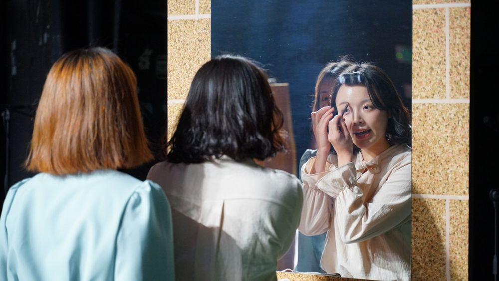

두 사람이 등장하는 45개의 장면. 장면에는 순서가 없고, 대화가 나눠지는 곳이 제목이다. 서로 다른 장소에서 서로 다른 인물들이 꿈 해몽, 수학 문제, 소개팅 같은 서로 다른 주제로 이야기를 나눈다. 영웅을 찾는 대신, 누군가의 시대도 무언가의 시대도 아닌 동시대를 동시대로 사유하려는 연극.
2020.3.28–4.3 / 대학로예술극장 대극장
작: 전성현
연출: 윤한솔
조연출: 정유진
무대: 신승렬
조명: 김형연
의상: 김경희
음악감독: 이민휘
영상·음향: 윤민철
영상 촬영: 한문희
무대감독: 홍준석, 손세리, 김동영
기획: 이윤숙
티켓: 노지희
홍보: 박보람
그래픽디자인: 워크룸
출연: 강학수, 권태건, 김원태, 박경은, 박지아, 신상훈, 신재환, 이동영, 이민정, 이재혜, 이주형, 이지원, 임진웅, 정양아, 정연종, 조은원, 최귀웅, 최문석, 최지현
2020.5.8 〈한국연극〉 5월호 비평 (네이버 블로그)
2020.5.1 기사 (Today's Theater in Seoul)
2020.4.17 비평 (서울연극센터 웹진)
2020.4.2 관람 후기 (네이버 블로그)
이전: 노동풍경1: 실업 | 다음: @GODBLOG
아카이브로 돌아가기 | 아무 작품이나
발행일 2026.11.13